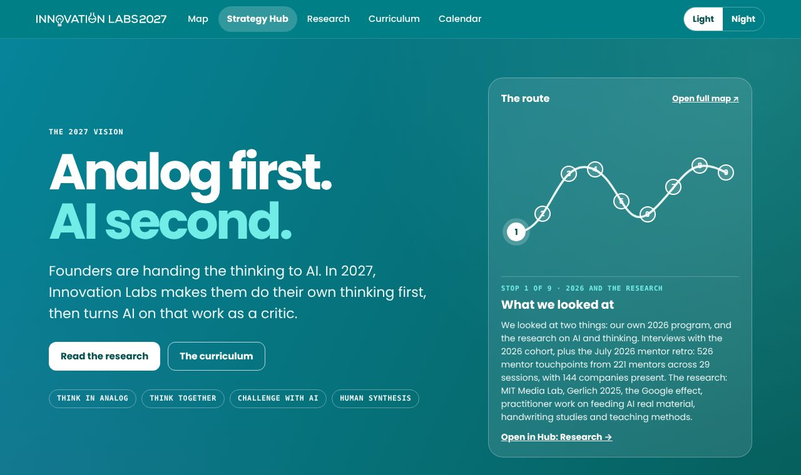
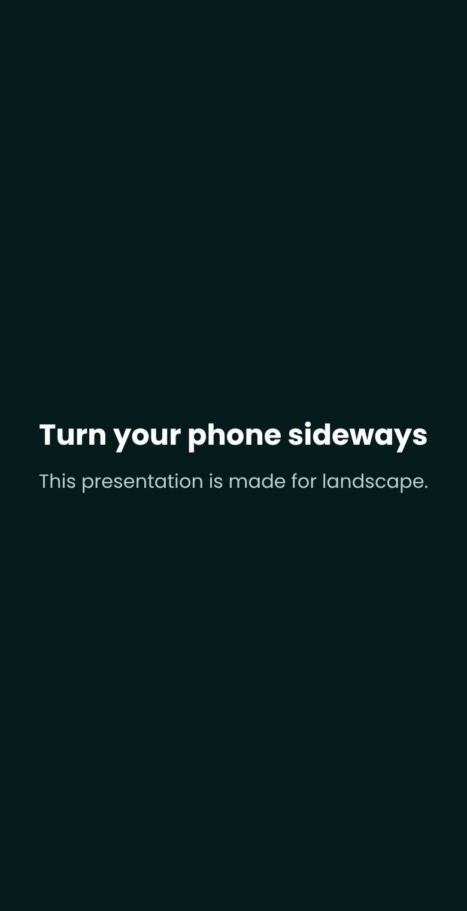
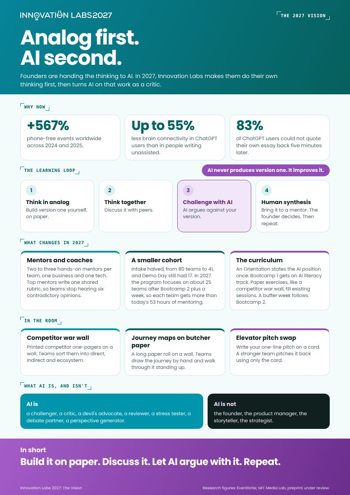

handdrawn-diagram
Loose arrows, circles, notes and relationships. Useful when the visual should explain an idea rather than decorate it.
A portable Innovation Labs system for websites, decks, one-pagers and social content — now with source-grounded content planning and custom brand visual direction.
Reading areas stay on flat teal-tinted surfaces. Gradients and mesh go on bands: the nav, heroes, covers, panels and closing slides. Switch Light, Night and accent in the top bar and everything below follows.
5px top edge in teal, deep teal or accent. Lifts on hover.
Accent tint, accent border, accent ink title.
What the deck and hub audits found. Both pages were patches stacked on patches, with sizes that jumped between breakpoints and edges that did not line up. These rules replaced them. New outputs start from them.
/* every size comes from one unit */ body{ --k:1; /* auto-shrink, never below .8 */ --u:calc(clamp(7.5px, min(.6vw + 3px, 1.55vh), 12.5px) * var(--k)); } @media (orientation:portrait){ body{--u:calc(clamp(9px, 2.5vw, 12px) * var(--k))} } h2{font-size:calc(var(--u) * 3.4)} .card{padding:calc(var(--u) * 1.2) calc(var(--u) * 1.4)}
A laptop, a projector and a sideways phone all scale the same way because landscape takes the smaller of width and height. Upright phones follow width only and scroll. Headings, text, gaps and radii all multiply the same unit, so nothing jumps at a breakpoint.
One fluid layer, brand tokens untouched, no !important. If a fix needs a new layer on top, rewrite the rule instead.
WasFive stacked patch layers and about 90 !important rules fighting each other.
Auto-shrink starts at 1 and stops at 0.8, so a tall slide fits without text going microscopic.
WasEvery size multiplied by 1.35 on desktop. A 1440 laptop got 100px cover titles.
Type and gaps scale smoothly with the screen. No hard-coded phone size.
WasHub hero at 92px on a laptop, then straight down to 44px on phones.
Header, section rail and content share one width and one gutter. Page margins are even on both sides.
WasLogo about 20px left of everything under it. Deck content hugged the left rail with an empty gap on the right.
The "+" sits on the first line of every card, step and row. Step numbers line up with their headings, and the connecting line runs through their centres.
WasMarkers jumped to the middle when an item opened.
Long labels wrap in their own column. On phones, two-column rows stack into one card, label on top.
WasA 220px column of "ABOUT 20 TO 21 MAR 2027" squeezed the timeline text.
Desktop: ‹ › mid-right, mirroring the stop rail. Portrait phones: ‹ › and full screen move to a bottom row. Stop detail is a bottom sheet on portrait phones, a centred dialog everywhere else.
WasButtons sat on top of slide text on phones.
Logo, links and switches stay on one row. Links scroll sideways. Anchors land below the sticky header.
WasA two-row header stacked on the rail, and jumps landed under it.
1440×900, 844×390 (phone sideways), 390×844 (phone upright). Nothing scrolls sideways at any of them. Screenshot before and after every fix.
| Bug found | Rule now |
|---|---|
| "Half the cohort" chart drew three full-width, 240px slabs on top of each other | Charts are real column charts, drawn to one scale |
| "How we will find out" panel set entirely in small uppercase mono, list included | Mono is for labels and kickers only, never running text |
| 2027 number in dark purple on a dark ground | Accent text uses --ax-ink per theme, never a fixed hex |
| Route stop labels crashed into each other on smaller laptops | Labels scale with the map (container units) |
| Short calendar list indented for numbers it did not have | Plain lists sit flush left |
The accent is a role, not a color. It marks what is new, AI as challenger, the current stop, plans and the focus ring. Change one attribute and every output swaps: data-accent="yellow".
AI cards, new tags, current stop, hand note.
Same card, same structure, gold ink on a pale yellow tint.
| Token | Purple | Yellow | Rule |
|---|---|---|---|
--ax | #954BBC (Night #C48BEA) | #FBBF45 | Fill for discs, buttons, tags |
--ax-ink | #6B2E8C | #7A4B00 | Text on light grounds, 4.5:1 |
--ax-on | white | #10201F | Label on an accent fill. Never white on yellow |
--ax-tint | #F1E7F8 | #FFF6DA | AI cards, new rows |
--ax-grad | #A45CC9 to #6B2E8C | #FDD49F to #F9A751 | One band or callout per view |
Tokens in CSS for tiny files and theme awareness, exact JPG backgrounds from the IL25 templates for social and PDF. Text on pastel mesh is ink, never white.
The template folder calls the yellow set "orange". Classic ships cover and square only.
Vector, teal and gold on transparent, from the IL25 and IL26 packs. They decorate the ground, never the content, and they are not clip-art or a logo.
Yellow accent: hex-gold, bulb-glass, hourglass-bulb. Purple accent: star, flask. Green topics: ring-mesh. Rooms and stages: frame-mesh. Decorative images always carry alt="".
content-planner separates choosing what to say from producing the final artifact. Ideas stay anchored to the source, a human chooses the direction, and only then does the output skill take over.
Creativity can change the expression. It must not silently change the source.
brand-image-maker chooses a visual grammar instead of defaulting every post to the same card template. The mode describes how the image should think, not just which colors it should use.
Loose arrows, circles, notes and relationships. Useful when the visual should explain an idea rather than decorate it.
A person, object or moment carries the story. Useful when the post needs a scene with a clear human or narrative centre.
Light, stage energy and atmosphere. Useful for event moments and announcements where the feeling of the room matters.
If a runtime has no dedicated image-generation tool, the skill can still art-direct the image and fall back to briefs, SVG or rendered graphic output rather than pretending generative art was produced.
The Strategy Hub is the reference look. One shared list of stops drives the map, the mini-map, the deck and the chapters. Pick a stop. On a phone this becomes a vertical journey with a bottom sheet.

The original hub text in this look: route-first map and a mini route in the header, with a Light and Night switch.
Open the strategy hubThe new deck merges the Hub route with the pitch. Slide one is the route. Every later slide carries its stop number, and the stop strip at the top jumps between stops. Open the deck to try it.

Serpentine route with 9 numbered stops. Tap a stop for detail and a jump into its chapter.
Portrait gets the vertical journey and a sideways hint. Landscape gets the full route.
The strip under the progress bar shows where you are on the route and jumps between stops.
The presenter taps Lead and every phone follows. Works when the deck is published as an Artifact with the room capability.
A4, print-safe, in the Hub look. Brand gradient header, tinted cards, accent gradient closing band. The dotted grid is gone. Accent follows the switch.

Brand gradient with the white logo, or a pastel mesh with the primary logo.
Accent gradient. Yellow takes dark text.
If it does not fit, move detail to the Hub and link.
A lens changes the voice. Facts, structure and look stay where they were.
In 2027, Innovation Labs will focus on about 25 teams after Bootcamp 2, so each receives more than the 53 hours of mentoring delivered per team in 2026.
Precise and concise. Confident without hype.
From 2027 we're keeping things smaller: about 25 teams after Bootcamp 2, so every team gets more than the 53 hours of mentoring they had in 2026.
Warm and direct. Contractions welcome, never childish.
Fewer teams, more mentor per team. About 25 teams continue after Bootcamp 2, and each gets more than the 53 hours of 2026. The math is on your side.
One light line is enough. If humor costs clarity, it goes.
Simple requests can go straight to an output skill. When the source needs interpretation, start with content-planner. Add one voice lens when tone matters, brand-elements for reusable assets, and brand-image-maker when the idea needs a custom visual.
Read this source, propose up to five grounded content directions, then stop so I can choose the idea and format.
Turn the selected brief into a 5-frame social carousel. Use one primary thought per frame and handdrawn-diagram visual direction.
Make a route-first deck from this strategy. Yellow accent, link to the Hub.
Make a partner one-pager from this strategy in a formal voice.
Template gradient. One message.
insta-post-maker keeps one primary thought per frame. Template grounds and brand elements remain available, while frames that need a custom visual can hand off to brand-image-maker. Sizes: 1080x1080, 1080x1350, 1080x1920, 1200x627.